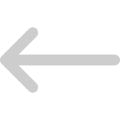
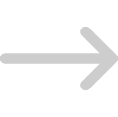

Системы счисления
Компьютеры понимают только очень ограниченный набор инструкций, и чтобы заставить их что-то делать, нужно четко сформулировать задание, используя эти же инструкции. Программа (также «приложение» или «программное обеспечение», или «софт») — это набор инструкций, которые указывают компьютеру, что ему нужно делать. Физическая часть компьютера, которая выполняет эти инструкции, называется «железом» или аппаратной частью (например, процессор, материнская плата и т.д.). Данный урок является началом серии уроков по программированию на языке С++ для начинающих.
Компьютеры понимают только очень ограниченный набор инструкций, и чтобы заставить их что-то делать, нужно четко сформулировать задание, используя эти же инструкции. Программа (также «приложение» или «программное обеспечение», или «софт») — это набор инструкций, которые указывают компьютеру, что ему нужно делать. Физическая часть компьютера, которая выполняет эти инструкции, называется «железом» или аппаратной частью (например, процессор, материнская плата и т.д.). Данный урок является началом серии уроков по программированию на языке С++ для начинающих.
Компьютеры понимают только очень ограниченный набор инструкций, и чтобы заставить их что-то делать, нужно четко сформулировать задание, используя эти же инструкции. Программа (также «приложение» или «программное обеспечение», или «софт») — это набор инструкций, которые указывают компьютеру, что ему нужно делать.
Компьютеры понимают только очень ограниченный набор инструкций, и чтобы заставить их что-то делать, нужно четко сформулировать задание, используя эти же инструкции. Программа (также «приложение» или «программное обеспечение», или «софт») — это набор инструкций, которые указывают компьютеру, что ему нужно делать.
Компьютеры понимают только очень ограниченный набор инструкций, и чтобы заставить их что-то делать, нужно четко сформулировать задание, используя эти же инструкции. Программа (также «приложение» или «программное обеспечение», или «софт») — это набор инструкций, которые указывают компьютеру, что ему нужно делать.
Компьютеры понимают только очень ограниченный набор инструкций, и чтобы заставить их что-то делать, нужно четко сформулировать задание, используя эти же инструкции. Программа (также «приложение» или «программное обеспечение», или «софт») — это набор инструкций, которые указывают компьютеру, что ему нужно делать. Физическая часть компьютера, которая выполняет эти инструкции, называется «железом» или аппаратной частью (например, процессор, материнская плата и т.д.). Данный урок является началом серии уроков по программированию на языке С++ для начинающих.
Компьютеры понимают только очень ограниченный набор инструкций, и чтобы заставить их что-то делать, нужно четко сформулировать задание, используя эти же инструкции. Программа (также «приложение» или «программное обеспечение», или «софт») — это набор инструкций, которые указывают компьютеру, что ему нужно делать. Физическая часть компьютера, которая выполняет эти инструкции, называется «железом» или аппаратной частью (например, процессор, материнская плата и т.д.). Данный урок является началом серии уроков по программированию на языке С++ для начинающих.
Составляющие компьютера:
- Компьютер
- Материнская плата
- Видеокарта
- Звуковая карта
- Процессор
Системы счисления
Компьютеры понимают только очень ограниченный набор инструкций, и чтобы заставить их что-то делать, нужно четко сформулировать задание, используя эти же инструкции. Программа (также «приложение» или «программное обеспечение», или «софт») — это набор инструкций, которые указывают компьютеру, что ему нужно делать. Физическая часть компьютера, которая выполняет эти инструкции, называется «железом» или аппаратной частью (например, процессор, материнская плата и т.д.). Данный урок является началом серии уроков по программированию на языке С++ для начинающих.
#Десятичная
Компьютеры понимают только очень ограниченный набор инструкций, и чтобы заставить их что-то делать, нужно четко сформулировать задание, используя эти же инструкции. Программа (также «приложение» или «программное обеспечение», или «софт») — это набор инструкций, которые указывают компьютеру, что ему нужно делать. Физическая часть компьютера, которая выполняет эти инструкции, называется «железом» или аппаратной частью (например, процессор, материнская плата и т.д.). Данный урок является началом серии уроков по программированию на языке С++ для начинающих.

Страница 1 из 10
